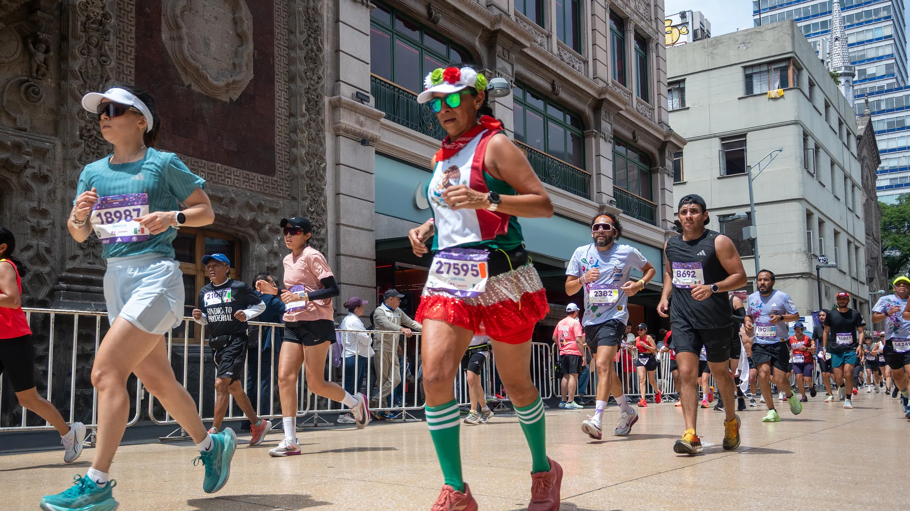

Lejos de ser un evento aislado donde las y los atletas se reúnen cada año, en la Ciudad de México, para recorrer un largo kilometraje, en medio del amanecer dominical fresco, este maratón nos regaló una edición más, arrancando desde Ciudad Universitaria hacia el Zócalo capitalino, con el peruano Christian Pacheco imponiéndose en la rama varonil, con un tiempo de 2:10:00, y con la etíope, Alemtsehay Asefa Kasegn en la femenil con un tiempo de 2:29:30.
Lo más significativo de esta edición del evento no ocurre en un podio absoluto, sino en las especiales: Brenda Osnaya volvió a ganar la rama femenil especial, repitiendo un triunfo que consiguió el año 2025, y en la varonil especial, el poblano Gonzalo Valdovinos se coronó campeón tras haber sido víctima de un accidente causado por un bache en la edición anterior. Este detalle, más que cualquier tiempo oficial, es la verdadera narrativa de este gran evento: la revancha, la aventura escrita sobre el mismo asfalto.

En 2024, Kenia dominó por completo los podios –Edwin Kiptoo y Fancy Chetumai se llevaron ambas coronas, consolidando la hegemonía de este país que ha caracterizado la prueba en años recientes–. En 2025, la carrera tuvo un giro etíope con Tadu Abate Deme y Beckelech Gudeta Borecha llevándose los títulos, aunque esa edición quedó marcada con un episodio lamentable: un bache en el kilómetro 20 provocó la caída del corredor que lideraba la prueba convaleciente.
Este 2026 la novedad fue la irrupción latinoamericana en la rama élite. Pacheco se convirtió en el primer corredor de América Latina en conquistar la prueba en tiempos recientes, rompiendo el patrón de dominio africano, aunque Etiopía conservó el resto del podio varonil y arrasó por completo en el femenil.
Asimismo, año con año, el maratón sigue siendo el termómetro de qué potencias atléticas están en su mejor momento –y esta vez, por primera vez en mucho tiempo, ese termómetro habló en español–.
Más allá de los resultados, vale la pena preguntarse ¿qué es lo que realmente deja este evento a la capital que la hospeda cada año? Un maratón internacional no es solo una carrera, sino un evento que moviliza corredores, espectadores, servicios, restaurantes, comercios y hoteles a lo largo de toda la ruta, con cerca de 30 mil competidores año con año, cifra que se ha mantenido desde el 2024 –y un operativo de seguridad que en ediciones recientes ha incluido mas de mil elementos de tránsito y vigilancia en tiempo real–.
El Maratón CDMX se ha convertido en mucho más que un simple evento deportivo: es un ejercicio anual de logística urbana a gran escala, casi un repaso general de lo que acabamos de vivir este verano con la Copa del Mundo.
Y ahí está quizás, el verdadero legado de esta justa: no solo saber quién es el mejor, sino confirmar que la Ciudad de México sabe recibir multitudes, sin perder el pulso y la emoción que vivimos al recibir a Inglaterra en los octavos de final del mundial. Cada domingo de agosto, miles de deportistas exhaustos cruzan el umbral en el Zócalo y, con ellas, la ciudad entera se prueba a sí misma. ¡Este año salimos bien preparados!